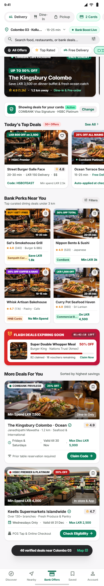
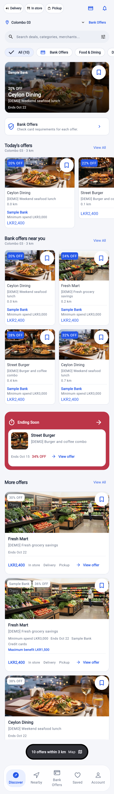

Discover: reference and corrected Flutter layout
The earlier build added a large branding header, oversized condition footers,
tall tiles, and a full card inside the expiry section. The correction follows
the reference's compact controls, photo-only hero, smaller collections, short
expiry banner, detail cards, and floating map entry.
The Flutter render uses fixture offers and the existing application navigation.
Sapphire is the previously approved brand colour. Card linkage, delivery estimates,
voucher inventory, and countdown claims require supported data.
Your supplied Stitch reference

Corrected Flutter Discover — fixture data

Dark appearance render
· Detailed comparison